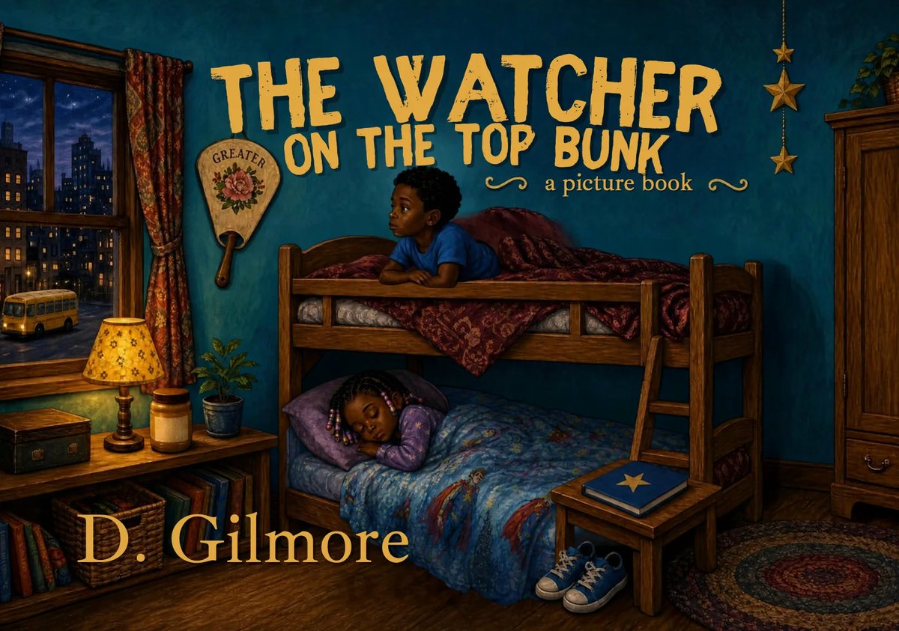

Relentless Library / Isaiah and Nia
Relentless Library · Characters
Isaiah and Nia
The Beacons description names two siblings: Isaiah, who keeps watch from the top bunk, and Nia, who sleeps below him.

IsaiahA young boy on the top bunk
NiaHis little sister, asleep below
AuthorD. Gilmore
Buy$3 on Beacons
The siblings in the book
Isaiah is a young boy who stays awake to watch over his little sister. He is the watcher of the title: he is on the top bunk, and he listens to the familiar sounds of their home through the night.
Nia is his little sister. The Beacons description places her on the bunk below him, asleep while he keeps watch. The listing does not give ages or last names, so this page does not add them.
What the product copy emphasizes is the relationship, not a long character biography: a brother paying attention, staying close, and helping his sister feel safe.
Questions
Who is Isaiah?
Isaiah is a young boy in the book who stays awake on the top bunk to watch over his little sister.
Who is Nia?
Nia is Isaiah’s little sister. In the story she sleeps on the bunk below him.